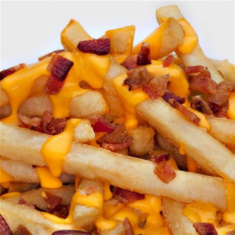

Papas fritas
Recetas de papas fritas caseras

Ingredientes
3 0 4 papas(300 gr)
Aceite
Sal
Elaboracion (pasos)
pelar las papas
cortaras en baston
calentar aceite en una sarten
cocinar hasta que esten doradas
removerlas del aceite y salar a gusto
Click Here